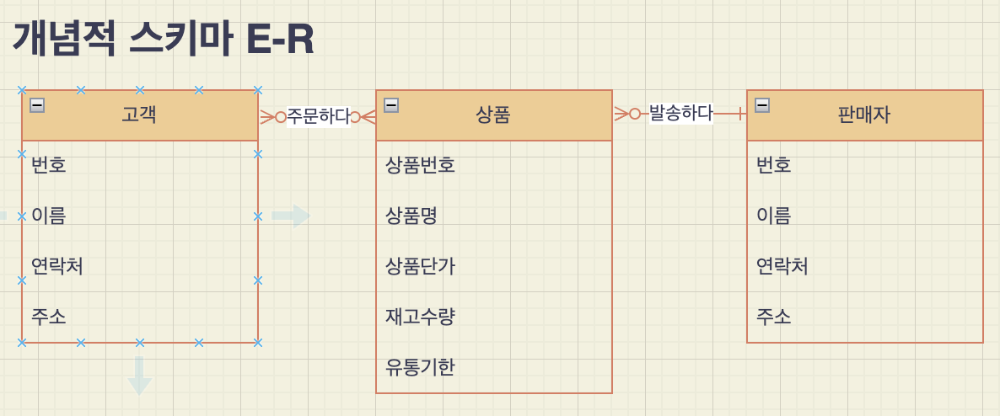
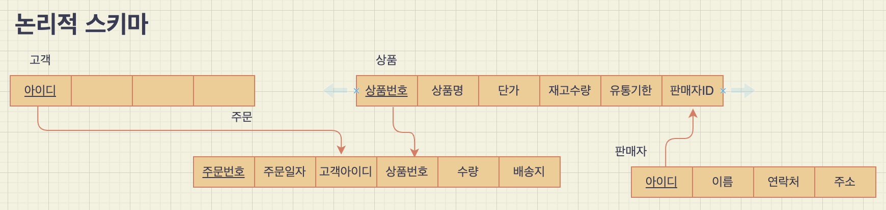

수업
- 파일 IO
- 데이터베이스
데이터베이스
- 메타 데이터 = 시스템 카탈로그(오라클 용어) = 데이터 사전 : DB의 수많은 테이블에 대한 정보 요약 저장
- 쿼리 날리면
- 구문 분석
- 시스템 카탈로그 이용해 테이블 정보 확인
- 권한 검사
- 효율적 실행 계획(execute plan) 생성 by 옵티마이저(최적화기) in DB engine
- 경험 기반: cost base (시스템 카탈로그에 있는 통계 정보 이용)
- 관례에 따라: rule base
- => IO 최소화 목적 why? 데이터가 디스크에 저장되어 있기 때문
- 디스크는 write를 동시에 할 수 없음(하나 밖에 없는 헤드가 있는 곳에 저장) => 여러 대의 디스크에 분산 처리
- 실시간 서비스 위해 디스크에 있는 데이터를 메모리에 올려 사용하는 메모리 기반 DBMS = MMDBMS => 전원이 나가도 최신 데이터가 유지되도록 노력
- => 휘발성 문제 해결 위해 SSD 기반 DB 개발. 단점은 수명이 짧음 => SSD의 여러 곳에 골고루 저장되게 해 특정 영역의 write 가능 횟수가 급격히 줄지 않도록 노력
- SQL 속도 개선을 위해 튜닝을 하려면 옵티마이저에 대해 잘 알아야 한다.
프로그램-데이터 독립성: DB는 파일을 논리적으로 모델링해서 사용하기 때문에 mysql을 쓰다가 oracle로 바꾼다고 해서 DB를 바꿀 필요는 없다.
데이터에 특화된 DB: 공간 DBMS, 시공간 DBMS
외래키
- 1:N => N쪽에 외래키 넣는다 eg. 교수:학생 => 학생테이블에 교수테이블의 기본키를 넣는다. 그래야 단일성이 유지된다.(교수테이블에 넣으려면 여러 학생을 같은 컬럼에 넣어야 하는 문제 발생)
- N:M => 중간에 매개하는 테이블을 만들어 매개 테이블에 양쪽의 외래키를 넣는다.
트랜잭션: DB에서 수행되는 논리적인 작업 모음
보안 관련 공부할 때 사용하는 운영체제: 칼리 리눅스
데이터 모델링 도구: DA#
외부-개념-내부 단계로 나누는 이유는 독립성을 보장하기 위해서다. 한 쪽이 바뀌더라도 다른 쪽을 수정할 필요가 없도록
2 tier : 클라이언트가 서버에 직접 접속 3 tier : 2 tier로 서버에 부하가 집중되는 것을 완화하기 위해 중간에 middle ware를 두는 것
데이터 모델링 실습
- 쇼핑몰 요구사항 정리
- ER 다이어그램: 고객, 상품, 판매자
- 외래키
요구사항 분석
개체와 속성
- 회원: 회원아이디, 회원이름, 회원비밀번호, 회원연락처, 회원주소
- 상품: 상품번호, 상품명, 상품단가, 재고수량, 유통기한
- 판매자: 판매자아이디, 판매자이름, 판매자비밀번호, 판매자연락처, 판매자주소,
- 회원이 상품 주문: 회원아이디, 주문번호, 주문일자, 상품번호, 주문수량, 배송지*
- 판매자가 상품 발송: 판매자아이디, 주문번호, 상품번호, 주문수량, 배송지*
관계
- 회원 N 주문한다 M 상품
- 판매자 1 발송한다 N 상품
새발처럼 되어있는 것에 동그라미가 추가된 것은 옵션


객체지향 개념 익히기
- toString(): 객체의 값들을 하나의 문자열로 표현해서 리턴하는 메서드를 만들 때 많이 사용하는 이름
- Method Overriding
- Polymorphism: 수퍼클래스 타입의 참조 변수가 서브클래스 타입의 객체를 참조할 수 있다.
- Dynamic Binding
- split string
- array reallocation
미니 프로젝트 제안
유행을 따라 저도 미니 프로젝트를 제안하고자 합니다. 자바로 객체지향 프로그래밍을 연습하는게 목적입니다.
구체적으로는 작은 GUI 앱을 만들려고 합니다.
진행방법
- 먼저 이번 주말 동안 안내 강좌를 봅니다. 이번 주말에 다 보신 분에 한해서 모임을 진행하려고 합니다.
아래 링크된 강좌 중 3-1장 상속부터 3-5장 제너릭 프로그래밍까지입니다. 꽤 많은 분량이니 부지런히 보셔야 할 것 같습니다. 이해가 안 되는 부분은 스터디 과정에서 풀어나갈 수 있으리라고 기대합니다.
https://www.youtube.com/watch?v=hLJ2_JMn6_k&list=PL52K_8WQO5oWz_LYm3xg23m5q9qJXoE4n&index=26
함께 만들 앱은 이 강좌에서 만들어 가는 스케줄러앱을 GUI로 변형하는 것입니다. 잘 되면 db에 데이터를 저장하는 것까지 해보려고요.
주말에 다 보시면 월요일에 모여 프로젝트 설계를 합니다.
모임은 격일로 할까 합니다. 하루는 각자 코드로 구현을 하고 월, 수, 금에 모여 각각의 코드를 리뷰하는 형식으로 진행하는 게 좋을 것 같습니다. 코드 리뷰 과정에서 속 쓰리는 일이 있겠지만, 다른 사람의 조언을 듣고 다른 사람의 코드를 보며 배우는 게 많을 것 같습니다.
한 사람의 코드를 리뷰하는 데 30분 정도 예상을 하면 최대 3, 4명으로 진행해야 할 것 같습니다. 또한, 원격으로는 대화하기가 쉽지 않으니 교육장으로 오실 수 있는 분밖에 할 수 없을 것 같아요.
이상은 제가 생각나는 점을 나열한 것일 분 확정사항이 아닙니다. 함께하실 분이 정해지면 다시 논의해 봐요.
관심 있으신 분은 DM 주세요.